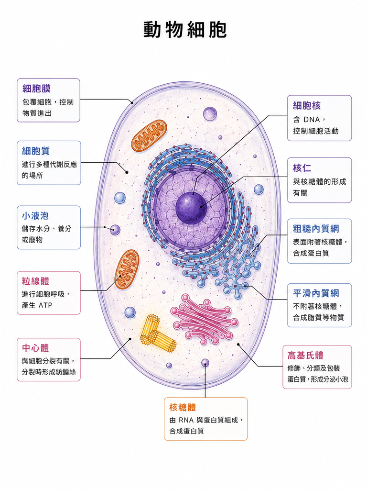
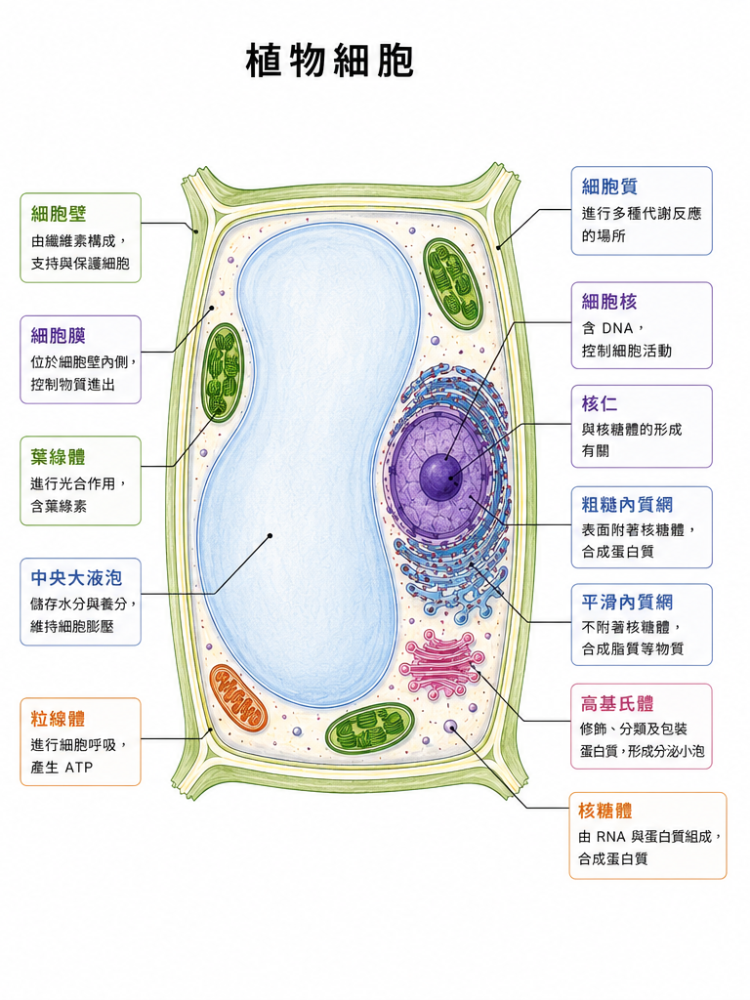

ANIMAL CELL 動物細胞

比較項目
| 比較項目 | 功能差別 |
|---|---|
| 外層構造 | 只有細胞膜，負責控制物質進出；沒有細胞壁，所以形狀較不固定。 |
| 能量來源 | 主要靠粒線體進行細胞呼吸，產生 ATP 供細胞活動使用。 |
| 分裂相關 | 常見中心體，和細胞分裂時紡錘絲形成有關。 |
| 儲存構造 | 液泡通常較小，主要暫存水分、養分或廢物。 |
以動物細胞與植物細胞的構造圖做左右對比，重點放在學測常考的構造差異與功能判斷。

| 比較項目 | 功能差別 |
|---|---|
| 外層構造 | 只有細胞膜，負責控制物質進出；沒有細胞壁，所以形狀較不固定。 |
| 能量來源 | 主要靠粒線體進行細胞呼吸，產生 ATP 供細胞活動使用。 |
| 分裂相關 | 常見中心體，和細胞分裂時紡錘絲形成有關。 |
| 儲存構造 | 液泡通常較小，主要暫存水分、養分或廢物。 |

| 比較項目 | 功能差別 |
|---|---|
| 外層構造 | 細胞膜外有細胞壁，主要提供支持、保護，讓細胞形狀較固定。 |
| 能量轉換 | 有葉綠體，可進行光合作用；粒線體仍負責細胞呼吸產生 ATP。 |
| 分裂相關 | 高等植物細胞通常沒有中心體，分裂方式與動物細胞不同。 |
| 儲存構造 | 中央大液泡儲存水分與養分，並維持細胞膨壓。 |